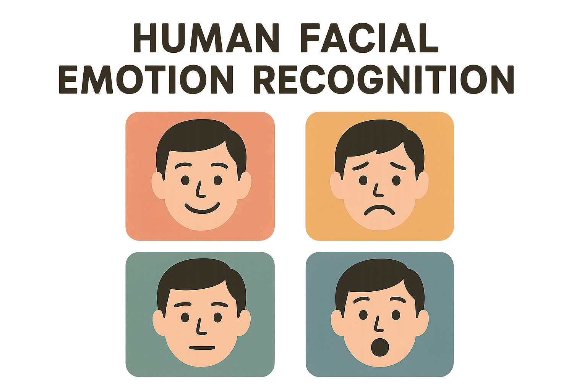

A project that explores the use of Convolution Neural Networks in predicting Human Emotions based on facial images. The InceptionResnet model is fine-tuned based on the Ravdess Kaggle Dataset.
| Model | Accuracy | Loss | Validation Accuracy | Validation Loss | Epochs |
|---|---|---|---|---|---|
| InceptionResnet | 86.46% | 0.3664 | 76.09% | 0.6606 | 20 |